HKU MSc(CompSc) · Financial Computing · Capstone Project
Real-time Financial Sentiment Analysis & Trading Decision System
A modular multi-agent AI system that turns live market data, technical indicators, and sentiment signals into explainable BTC buy / sell / hold recommendations within a target of under 15 seconds — with full audit trail and paper execution.
Overview
Cryptocurrency markets run 24/7 and produce dense, multi-source signals. Existing approaches tend toward either opaque end-to-end models or brittle fixed rules. This project delivers a production-style decision-support prototype that is fast, modular, and auditable: every recommendation can be traced back to the market snapshot, technical signal, and sentiment reading that produced it.
Aim
Design, implement, and evaluate a collaborative agent architecture for BTC/USDT on Binance that ingests live market data, technical analysis, and news/social sentiment, then fuses them into a final trade recommendation with confidence scores and a full audit trail. The system must remain explainable enough for academic evaluation and operational demo — not a single black-box predictor.
Problem & gap
Prior work falls into three families: rule-based systems (interpretable but brittle under regime change), single-model ML/RL approaches (strong pattern recognition but opaque), and sentiment-augmented predictors. Recent multi-agent LLM frameworks (AutoGen, CrewAI, LangGraph) show promise for specialised roles, but finance prototypes rarely combine real-time multi-source ingestion, specialised agents, and an explicit consensus / risk layer in one deployable system. This project fills that gap with a production-style prototype.
Scope
- In scope: BTC/USDT spot on Binance; paper trading only; four core agents (MDA, TAA, STA, TCA); Redis message bus; PostgreSQL audit log; React dashboard; multi-year backtests; SOTA baselines; OCA regime-sizing extension; June–July 2026 daily-signal live test.
- Out of scope: real-money trading; multi-asset portfolios; derivatives; high-availability production infra beyond Redis Pub/Sub; regulatory compliance / brokerage integration.
-
O1
Architecture & infrastructure
Containerised Redis message-bus runtime with PostgreSQL audit logging, paper execution, and an operator dashboard.
-
O2
Specialised agents
MDA, TAA, STA, and TCA with documented input/output contracts and parallel team development.
-
O3
Evaluation framework
Shared backtest harness for baselines, individual-agent ablations, and integrated multi-agent runs under identical fees and metrics.
-
O4
Honest comparison
Results positioned against classical TA, StockBench-style LLM trading, hourly XGBoost forecasting, and agent ablations on matched 2023–2025 windows.
-
O5
Operational demonstration
Live paper-trading dashboard plus a June–July 2026 daily-signal live test with lookahead-safe execution.
Contributions at completion
- A working four-agent system with Redis contracts, audit trail, risk-gated paper execution, and a React operations dashboard.
- An enhanced TCA (adaptive trend overlay + STA soft-risk) that outperforms matched baselines on 2023–2025: +677.2% return, Sharpe 2.21.
- A closed interim open question on OCA integration: Regime Gate recommended for live sizing; Voter reported as ablation (+763.2% / +806.0%).
- A SOTA comparison tier (StockBench LLM, multi-horizon forecasting) under a shared evaluation window, plus a 40-day 2026 live-test workflow.
Performance targets vs outcomes
- End-to-end latency
- < 15 s · met
- Sharpe ratio (TCA 2023–2025)
- 2.21 · target > 1.5
- Max drawdown (TCA 2023–2025)
- −23.1% · near < 20% target
- Total return (TCA 2023–2025)
- +677.2% vs B&H +427.5%
Evaluation protocol (shared assumptions)
- Primary window: daily BTC/USDT bars, 2023-01-01 → 2025-12-31, $10,000 start.
- Long-only signal-based execution: BUY opens / maintains long; SELL or flat exits; no short selling in the default demo path.
- Metrics panel: total return, Sharpe, Sortino, max drawdown, average exposure, trade-event count.
- Baselines and agents are compared on the same calendar window wherever possible (Summary PPT pack).
- Live test uses a stricter timing rule: decide after completed UTC day D close; execute at D+1 open (lookahead protected).
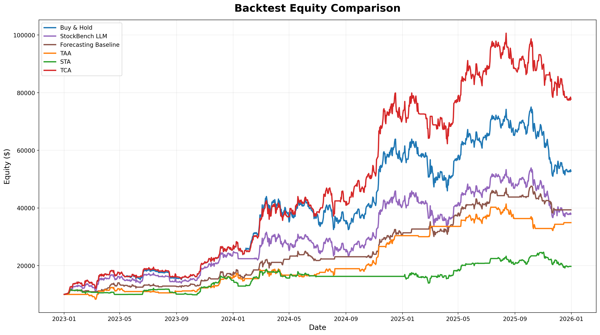
Team
Four students developed specialised agents in parallel against shared Pydantic contracts,
with a single mentor providing academic guidance. Parallel development was a design goal:
no agent imports another; all communication goes through Redis and validated schemas.
Shared contracts in shared/schemas.py and adapter logic in
shared/agent_contracts.py kept interfaces stable as agents evolved.
Mentor — Ka-Ho Chow
-
LAM Wai Chiu
Leader · Trade Coordinator Agent (TCA)
UID 3036380999
Adaptive consensus & risk overlays, system integration, project management, audit trail, OCA integration decision, final evaluation narrative
-
YUEN Wai Yin
Sentiment Tracker Agent (STA)
UID 3036411906
NLP pipeline (FinBERT), news/social ingestion (X, Reddit, Tavily/GDELT), spam filtering, multi-year sentiment backtests
-
FUNG Wai Ho
Technical Analyst Agent (TAA)
UID 3036197433
Indicator pipeline, regime classification (trend / range), multi-year TA backtesting vs classical baselines
-
FAN Man Fei
Market Data Agent (MDA) · On-Chain Analyst Agent (OCA)
UID 3035585413
Live Binance ingestion (MDA), Redis/PostgreSQL infrastructure, FastAPI backend, React dashboard, live-test UX; OCA on-chain signal design, integration ablation (Regime Gate / Voter), and multiplier robustness validation
Architecture
The runtime topology is a publish/subscribe pipeline: market and sentiment data enter at the top, specialised agents publish typed signals, and TCA emits the final recommendation to logger, paper execution, and the dashboard.
Design principles
- Specialisation over generality — each agent owns one job and is unaware of others’ internals.
- Audit by construction — decisions decompose into upstream signals, confidences, rules, and timestamps.
- Decoupling through a message bus — agents communicate only via Redis channels and Pydantic schemas.
- Determinism in the decision layer — TCA core logic is pure (no I/O); same inputs → same outputs.
- Parallel development — shared contracts let four teammates implement agents concurrently.
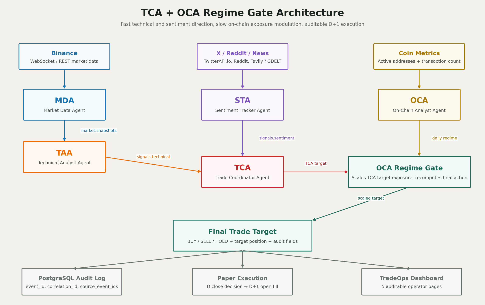
Core agents
-
MDA — Market Data Agent
Subscribes to Binance WebSocket streams (
kline_1m,aggTrade,miniTicker) with REST fallback when the socket drops. Everysnapshot_interval_s = 3sit publishes aMarketSnapshotwith price, OHLCV,price_change_5m, 1-hour returns, 24h volume, and atrigger_eventfrom the enum {NONE,PRICE_BREAKOUT,PRICE_DROP,VOLUME_SPIKE}. Defaults: ±1% price move over 300s for price triggers; current 1-min volume ≥ 3× the trailing 30-min mean (≥ 10 samples) for volume spikes. Trigger detection lives in a pure kernel (agents/mda/trigger.py) with deterministic unit tests. Every snapshot carriesevent_id+correlation_idfor audit lineage, and optional PostgreSQL tick persistence (STORE_TICKS=true) enables full ingest replay. Async I/O with structured logging viastructlog. -
TAA — Technical Analyst Agent
Maintains a rolling OHLCV buffer and computes EMA, RSI, MACD, Bollinger Bands, ATR, and ADX. Classifies regime as TREND_UP / TREND_DOWN / RANGE (ADX + EMA/SMA heuristics), then runs either a 4-indicator trend-following vote or a gated mean-reversion path (ADX < 20, RSI extreme, narrow Bollinger width). Outputs BUY / SELL / HOLD with confidence, position size, ATR-based stops, and market-context metadata. Long-only mode can map SELL→HOLD while preserving raw direction for audit.
-
STA — Sentiment Tracker Agent
Aggregates X/Twitter, Reddit, Tavily, and (for live-test gaps) GDELT news. Each item is scored with FinBERT (finance-lexicon fallback for CI), then adjusted for source credibility, BTC-specific keywords, spam filters, and engagement when available. Produces a unified score on a −10…+10 scale with source breakdown, catalysts, and rationale. Historical backtests use the packaged daily JSON / analysis files under
agents/sta/. -
TCA — Trade Coordinator Agent
Single decision point with freshness checks, confidence floors, and a full
decision_rulesaudit array. The production enhanced path uses adaptive trend overlay v4/v5: TAA signal strength for timing, overlay-computed EMAs for trend filter, and STA as a soft-risk overlay (supportive sentiment can maintain exposure; extremely bearish sentiment caps size or supports exits only when technical evidence is also weak). Pure logic lives inagents/tca/decision.py; Redis runtime inagent.py. -
OCA — On-Chain Analyst Agent Beyond scope · backtest-only
5th prototype agent built from Coin Metrics Community free-tier metrics only — no paid data, so results are reproducible without any commercial API key. Primary signal: 7d/30d moving-average ratio of active addresses (
AdrActCnt) mapped to {BULLISH,BEARISH,NEUTRAL} with base confidence 0.50–0.80. Confirmation: transaction-count (TxCnt) 7d/30d agrees → +0.10 confidence, disagrees → −0.10. Realized-cap / MVRV is deliberately omitted because it is paid — an explicit reproducibility choice. Over 2023–2025 the signal distribution is NEUTRAL 71.8% · BEARISH 15.2% · BULLISH 13.0% — quiet by design, speaking only at genuine regime transitions. Because OCA updates only a few times per year, its intended live role is sizing modulation (Regime Gate), not directional voting alongside TAA/STA. OCA is currently backtest-only and off the live Redis bus; live-bus wiring is documented future work.
TCA adaptive overlay (simplified)
| Rule | Condition |
|---|---|
| Enter / maintain long | TAA signal_strength > −0.20 or overlay EMA3 > EMA50 |
| Exit / go flat | TAA signal_strength < −0.40 and EMA10 < EMA50 |
| STA soft support | Supportive STA can help keep exposure when the trend is not bearish |
| STA soft risk | Extremely bearish STA can cap position (e.g. 0.75×) rather than hard-veto every entry |
OCA Regime Gate multipliers
| OCA signal | Confidence | Multiplier on TCA target position |
|---|---|---|
| BULLISH | ≥ 0.70 | 1.00× (full participation) |
| BULLISH | < 0.70 | 0.85× |
| NEUTRAL | — | 0.70× |
| BEARISH | < 0.70 | 0.30× |
| BEARISH | ≥ 0.70 | 0.00× (force flat / veto new risk) |
Comparison baselines
-
Classical TA
Buy & Hold, SMA/EMA cross, RSI, MACD, Bollinger, Turtle / Donchian, momentum, volatility targeting — used to benchmark TAA.
-
StockBench-style LLM baseline
Daily loop: portfolio state → market/news analysis prompt → trade prompt → execution → portfolio update. Uses OHLCV, indicators, memory, and STA sentiment summaries — but not TAA/TCA outputs — so it tests a monolithic LLM alternative.
-
Forecasting baseline
Hourly multi-horizon XGBoost walk-forward (horizons 1h / 4h / 12h / 24h; best selected: 24h), plus PatchTST experiments. Long-only threshold rules chosen on validation folds.
Message bus
| Channel | Publisher | Subscribers |
|---|---|---|
market.snapshots |
MDA | TAA, STA, TCA |
signals.technical |
TAA | TCA |
signals.sentiment |
STA | TCA |
signals.trade |
TCA | Logger, Execution, Dashboard |
Every message carries event_id, correlation_id, and
source_event_ids, so a fill can be traced back to the exact market snapshot,
TAA signal, and STA reading that produced it.
Product layer
- Contract/adapter layer — normalises schema evolutions (e.g. nested
TAASignal↔ flat technical signal). - Event logger — persists all agent and execution channels to PostgreSQL.
- Risk gate + paper broker — confidence / age / exposure / daily-loss checks before simulated fills.
- FastAPI + React — Command Center, Decision Audit, Execution Monitor, Portfolio, TCA Analytics, System Health, and Live Test.
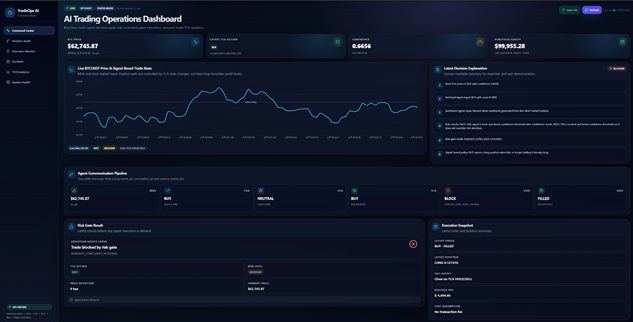
Stack: Python 3.11 · Redis Pub/Sub · PostgreSQL 16 · Pydantic v2 · FastAPI · React · Docker Compose · FinBERT · XGBoost · Ollama / StockBench-style LLM · Binance API · Coin Metrics · GDELT
Milestone
All planned milestones from the detailed proposal through final delivery have been completed. Rough learning-hour budget from the proposal was ~330 hours across literature, agents, evaluation, reporting, and the project webpage.
- Weeks 1–2 Topic finalisation and literature review Completed
- Weeks 2–4 Data sources, Redis/PostgreSQL infrastructure, MDA pipeline Completed
- Weeks 4–7 Technical Analyst Agent (TAA) and classical TA baselines Completed
- Weeks 6–8 Sentiment Tracker Agent (STA) and FinBERT pipeline Completed
- Weeks 8–10 Trade Coordinator Agent (TCA), risk gates, audit trail Completed
- Weeks 11–12 Evaluation harness, ablations, multi-year backtests Completed
- By June 2026 Interim report and presentation (open questions on OCA & SOTA baselines) Completed
- June–July 2026 Enhanced TCA, StockBench/forecasting baselines, OCA ablation, 2026 live test Completed
- July 2026 Final report, project webpage, and oral demonstration Completed
Deliverables
| Deliverable | Content | Status |
|---|---|---|
| Detailed proposal | Objectives, architecture, timeline, learning hours | Completed |
| Prototype system | MDA/TAA/STA/TCA + OCA, dashboard, paper execution | Completed |
| Interim report | Early results, challenges, revised plan | Completed |
| Evaluation suite | Multi-year backtests, SOTA baselines, OCA ablation, live test | Completed |
| Project webpage | This site — overview, team, architecture, milestones, progress | Completed |
| Final report & demo | Full methodology, results, oral walkthrough | Completed |
Progress
The project is complete. The timeline below follows delivery from infrastructure through agents, enhanced TCA, SOTA baselines, OCA integration, and the 2026 daily-signal live test, with method notes and result figures at each stage.
+677.2%
TCA total return (2023–2025)
2.21
TCA Sharpe (2023–2025)
+763.2%
TCA + OCA Regime Gate
+806.0%
TCA + OCA Voter ablation
-
Phase 1 · Infrastructure
Market data & runtime foundation
Docker Compose brings up Redis and PostgreSQL. MDA publishes live Binance snapshots every
snapshot_interval_s = 3swith WebSocket-primary + REST fallback, firingPRICE_BREAKOUT/PRICE_DROPat ±1% moves over 300s andVOLUME_SPIKEwhen current 1-min volume exceeds 3× the trailing 30-min mean. Optional PostgreSQL tick persistence (STORE_TICKS=true) supports full ingest replay. Shared Pydantic v2 schemas and channel constants let downstream agents develop against stable contracts before the full pipeline was wired. Unit tests cover the pure trigger-detection kernel and schema validation.Completed
-
Phase 2 · Technical analysis
TAA agent & classical baselines
Regime-aware TAA (EMA, RSI, MACD, Bollinger, ADX) with a pure
compute_taa_signal()function for reproducible offline backtests and an async Redis runtime for live demos. On the final shared 2023–2025 summary window TAA returns +249.0% (Sharpe 1.61, MaxDD −22.3%, avg exposure ~42%). Classical TA strategies on 2025 show wide dispersion (roughly −14% to +19%), motivating ensemble coordination via TCA.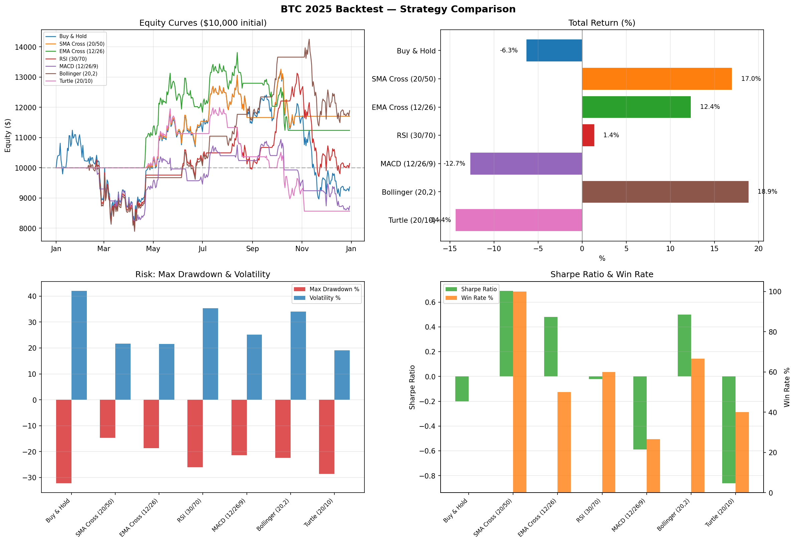
Figure 4 — Classical TA strategy comparison on BTC 2025 (equity, return, risk, Sharpe / win rate). 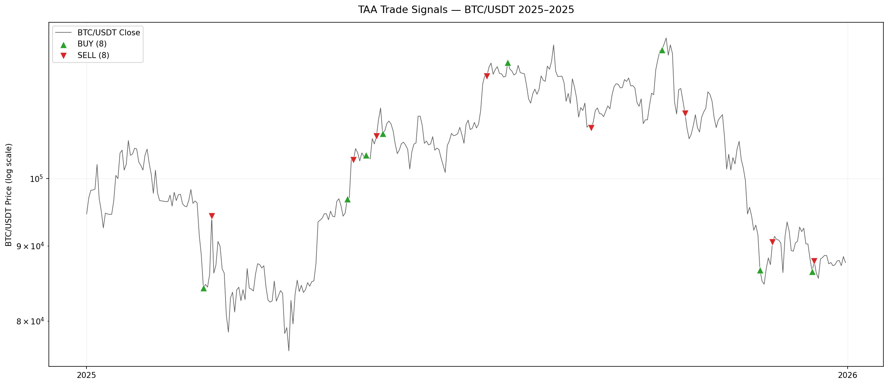
Figure 5 — TAA trade signals on BTC/USDT 2025. 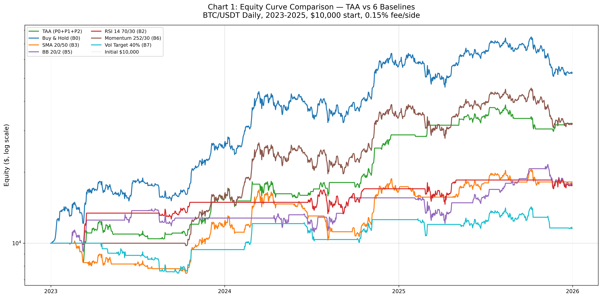
Figure 6 — Multi-year equity curves: TAA vs classical baselines. 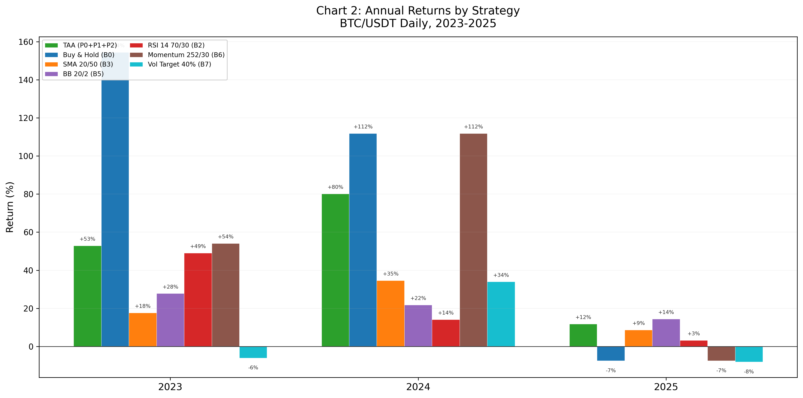
Figure 7 — Annual returns by strategy. 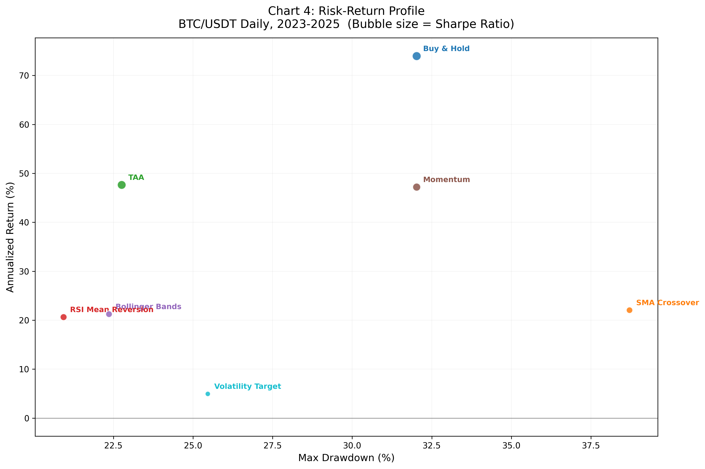
Figure 8 — Risk–return scatter across strategies. 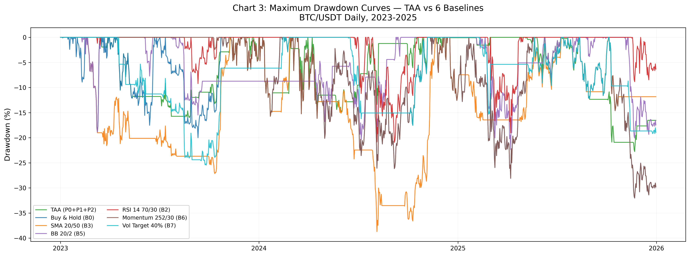
Figure 9 — Drawdown profiles over the multi-year window. 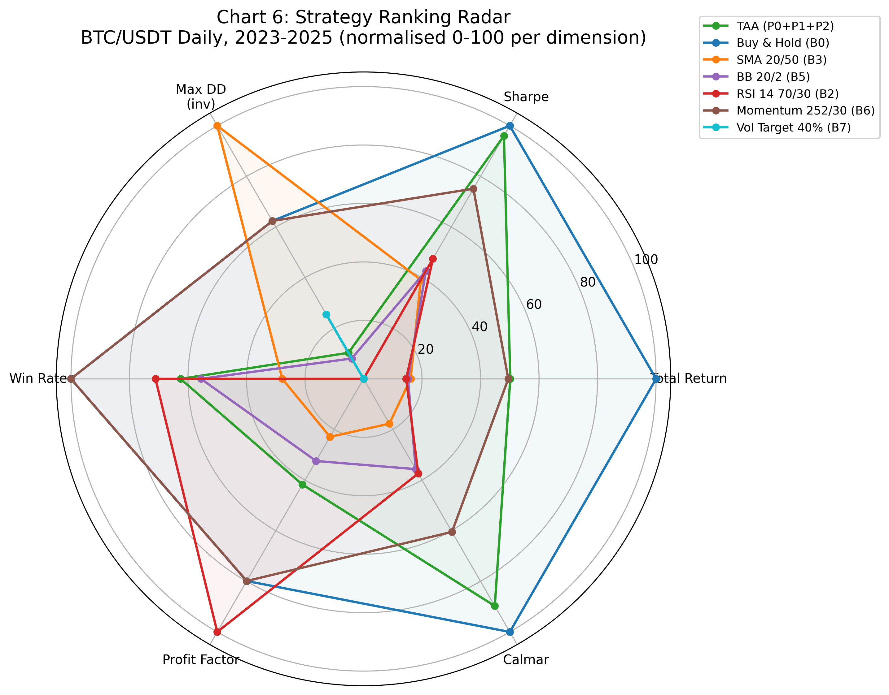
Figure 10 — Multi-metric radar comparison. Completed
-
Phase 3 · Sentiment analysis
STA agent & multi-year sentiment backtest
FinBERT scoring over X, Reddit, and news sources, with spam filtering, duplicate removal, credibility tiers, and engagement weighting. Standalone STA on the shared summary window returns +97.3% (Sharpe 0.89, MaxDD −25.6%). Tiered (50%/100%) vs extreme allocation rules were also validated across 2023–2025; both stay more defensive than Buy & Hold through the late-2025 drawdown.
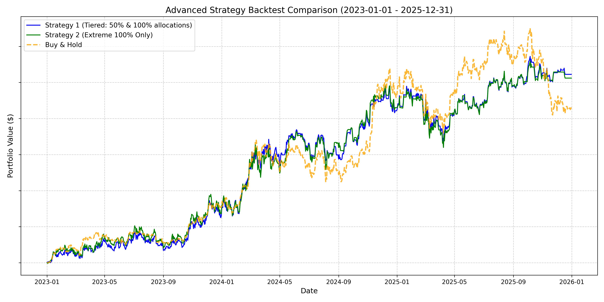
Figure 11 — STA advanced strategy backtest (2023–2025): tiered and extreme sentiment rules vs Buy & Hold. Completed
-
Phase 4 · Coordination
Enhanced TCA & multi-year head-to-head
Final TCA uses adaptive trend overlay v4/v5 plus STA soft-risk. Earlier hard STA vetoes made the coordinator too conservative; soft capping preserves upside while still reacting to extreme bearish sentiment. On 2023–2025 daily bars ($10K start) TCA returns +677.2% with Sharpe 2.21 and MaxDD −23.1%, beating Buy & Hold (+427.5%), StockBench LLM (+278.5%), Forecasting (+291.4%), TAA (+249.0%), and STA (+97.3%). Average exposure ~90.5% — more invested than TAA/STA alone, but with better risk-adjusted return than Buy & Hold.
Strategy (2023–2025) Return Sharpe MaxDD Avg exposure Buy & Hold +427.5% 1.59 −32.0% 100% StockBench LLM +278.5% 1.23 −32.0% 95.4% Forecasting (24h) +291.4% 1.93 −19.7% 43.4% TAA +249.0% 1.61 −22.3% 42.4% STA +97.3% 0.89 −25.6% 42.5% TCA +677.2% 2.21 −23.1% 90.5% 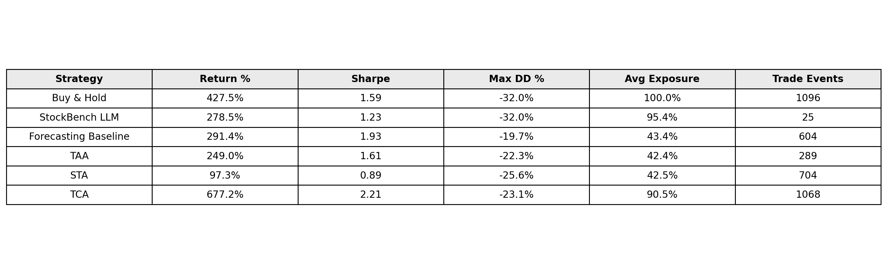
Figure 12 — Final summary statistics table (2023–2025). Figure 13 — Equity comparison across agents and SOTA baselines. 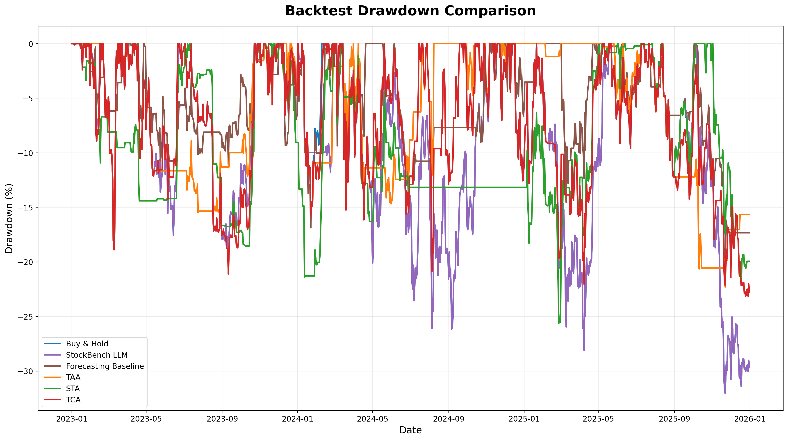
Figure 14 — Drawdown comparison on the same window. 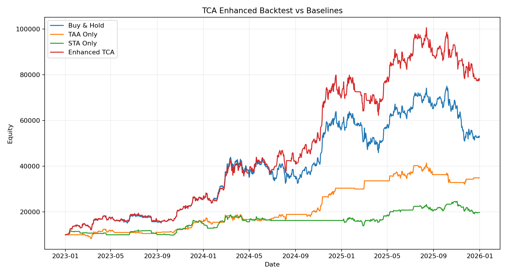
Figure 15 — Enhanced TCA equity comparison artefact. Completed
-
Phase 5 · Product layer
Dashboard, paper execution & audit trail
Event logger, risk gate, paper broker, FastAPI backend, and React TradeOps dashboard close the loop from research prototype to demonstrable system. Operators can inspect the latest TCA action and confidence, the pass/fail decision rules, risk-gate outcomes (e.g. already-long blocks), paired BUY→SELL PnL, portfolio equity, and agent heartbeats. A dedicated Live Test page supports the daily-signal workflow.
Figure 16 — Live TradeOps AI Command Center. Completed
-
Phase 6 · OCA integration
Regime Gate vs Voter ablation (closes interim open question)
Interim report §7.4 / §10.3 left OCA integration open. The final ablation applies OCA as a backtest overlay on the finalized enhanced TCA (no change to live TCA purity). Both modes improve TCA on 2023–2025: Regime Gate +763.2% (Sharpe 2.46); Voter +806.0% (Sharpe 2.53). MaxDD widens slightly to −25.6% because both variants participate more in bullish regimes; Sortino rises in both cases, confirming the extra drawdown is compensated by upside participation. Standalone OCA is also measured on the same window as a reference — +327.1%, Sharpe 1.63, MaxDD −22.8% — beating Buy & Hold on both Sharpe (1.63 vs 1.59) and MaxDD (−22.8% vs −32.0%) despite lower total return, confirming OCA is a legitimate signal on its own, not noise. Recommendation: adopt Regime Gate live (architectural fit for a slow signal); report Voter as comparative ablation.
Strategy (2023–2025) Total return Sharpe MaxDD Buy & Hold +427.5% 1.59 −32.0% OCA Only (standalone reference) +327.1% 1.63 −22.8% TCA +677.2% 2.21 −23.1% TCA + OCA Regime Gate +763.2% 2.46 −25.6% TCA + OCA Voter +806.0% 2.53 −25.6% OCA Regime Gate — multiplier robustness validation
Because the middle rows of the Regime Gate schedule (0.85 for weak-bullish, 0.70 for neutral, 0.30 for weak-bearish) are hand-tuned rather than optimised, the multiplier vector was stress-tested against three independent checks:
- Sensitivity sweep (±0.10). Every ±0.10 perturbation of every hand-tuned multiplier keeps the gate strictly above baseline TCA. Sharpe across seven perturbed runs stays in 2.43–2.49; Δreturn range +71 pp to +101 pp. The +86 pp headline is not brittle to the exact numbers.
- Regime partition. The aggregate lift is asymmetric across regimes: gate loses −22 pp in 2023 (recovery), wins +68 pp in 2024 (bull), and is roughly flat in 2025. Honest framing: OCA Regime Gate is a bull-regime amplifier over this window, not a universal improvement.
-
Minimal-schedule ablation. A veto-only variant (endpoints only, middle
rows collapsed to 1.00) actually underperforms baseline by 15.6 pp — so the middle rows
do meaningful work. As a byproduct,
neutral_multis dead code on this dataset because NEUTRAL sits below themin_confidence = 0.55gate; a documented honest simplification for future work.
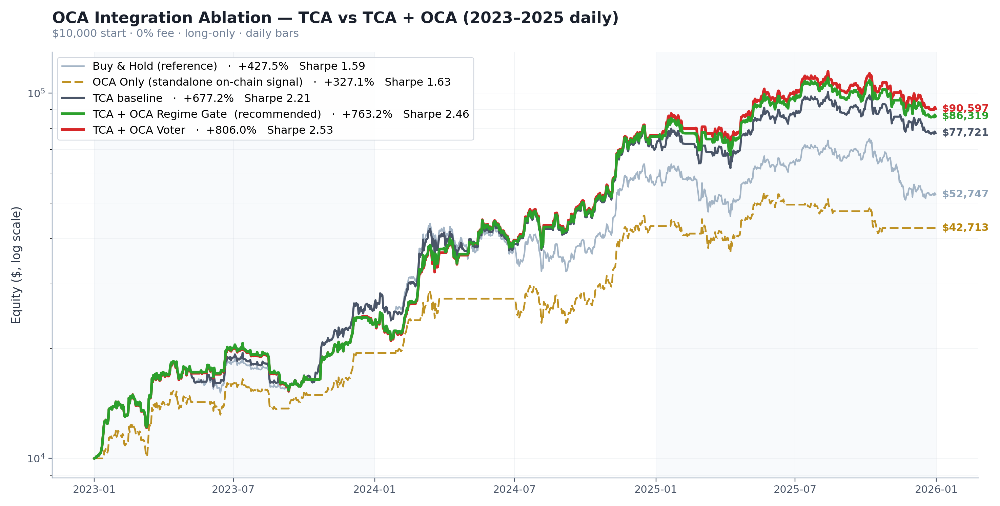
Figure 17 — OCA integration ablation: TCA vs TCA + OCA variants. 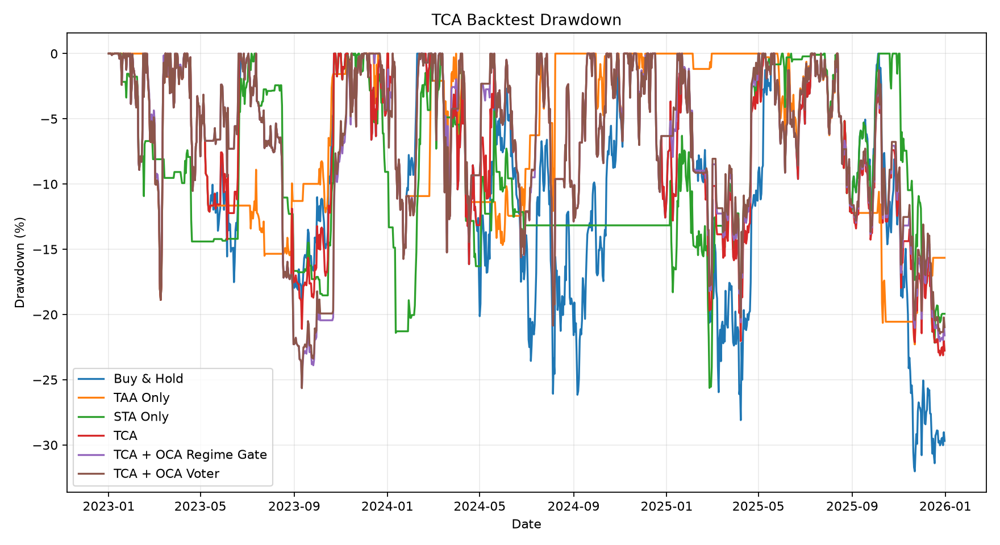
Figure 18 — Drawdowns for the OCA integration study. 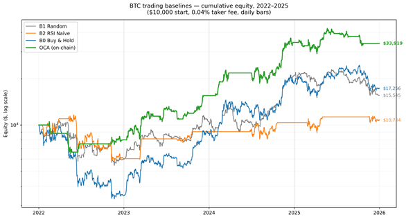
Figure 19 — Standalone OCA cumulative equity (earlier prototype study, 2022–2025). 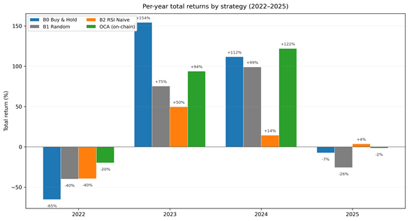
Figure 20 — Standalone OCA per-year returns (strong 2022 capital preservation). Completed
-
Phase 7 · Live test (Jun–Jul 2026)
Daily-signal paper live test
Operational check beyond historical backtest. Lookahead-safe daily workflow: generate one signal after completed UTC candle D; execute at the open of D+1. Uses latest TCA (trend_v4 + STA soft-risk). Real-time MDA remains display-only in this mode so live ticks cannot leak into daily decisions. Missing June–July 2026 STA dates are prepared from local archives and GDELT when needed. Window: 2026-06-01 → 2026-07-10 (40 live days, $10K start). Charts below compare TCA against Buy & Hold, TAA, and STA over that period.
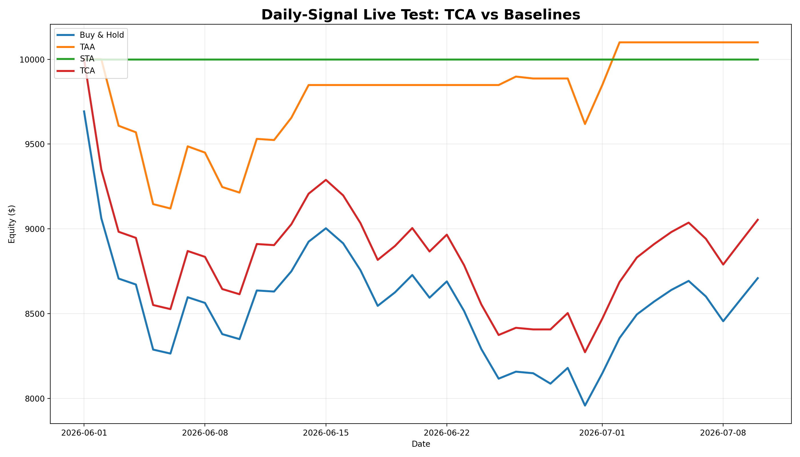
Figure 21 — Daily-signal live test equity: TCA vs Buy & Hold, TAA, STA. 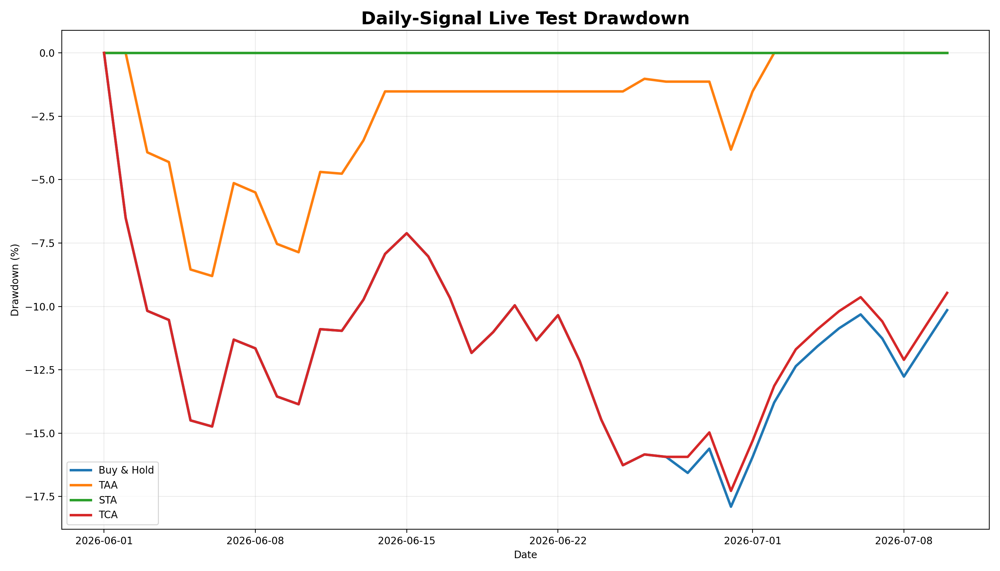
Figure 22 — Live-test drawdown comparison over the same window. Completed
-
Phase 8 · Delivery
Final report, webpage & demonstration
Final deliverables close the capstone. Key takeaways:
- Specialised agents plus an explicit coordinator beat matched classical and SOTA baselines on 2023–2025 risk-adjusted return.
- Soft STA risk overlays work better than hard vetoes for this market regime.
- OCA Regime Gate is the preferred live sizing integration; Voter remains a documented ablation.
- Audit IDs and the Live Test dashboard make the system demonstrable end-to-end without real funds.
Completed